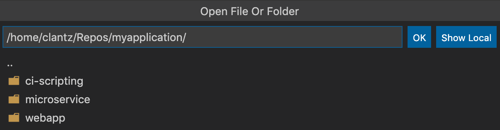

A practical workflow for data analysis

A practical workflow for data analysis
sample_id,reads
sample_A,1000
sample_B,1500
sample_C,1200samples,total_reads
3,3700We will move this project onto the cluster and produce this result.

| Keep this detail | Used for |
|---|---|
| NetID | Your login identity |
| Slurm account | The group’s compute allocation |
| Partition | A queue you may submit to |
| Project path | An approved writable folder |
Wait for approval and confirm these details and Duo access before connecting.
ssh YOUR_NETID@cc-login.campuscluster.illinois.edussh starts the connection · before @: your user name · after @: the cluster address

analysis.pyYour screen, keyboard, and mousedemo/analysis.pySave updates this file.In the SSH window, you work with files and a terminal on the cluster.
This installs the editor and connection tool on your laptop.

Complete password + Duo. Choose Linux if asked. The lower-left indicator should show SSH and the host.
| Location | Use it for | Remember |
|---|---|---|
| /u/YOUR_NETID | Settings and small personal files | Home has a quota. |
| /projects/YOUR_GROUP | Group data, software, and retained outputs | Use your assigned writable location. |
| /scratch/YOUR_NETID | Temporary working data | Files can be purged. |
For this example: /projects/YOUR_GROUP/demo
On your laptop: download the course files ↗, unzip them, and find HPC_Introduction/demo.

The SSH indicator identifies the cluster. Cmd+S / Ctrl+S saves edits directly to the remote file.
demo/
data/samples.csv
analysis.py
analysis.sbatch
hello.sbatch
notes.txt
README.mdThe results folder and Python environment will be created in later steps.
hostname
cd /projects/YOUR_GROUP/demo
pwdRun one line, press Enter, wait for the prompt, then continue.
Tab: complete a path · ↑: recall a command · Ctrl+C: stop the foreground command
sample_id,reads
sample_A,1000
sample_B,1500
sample_C,1200cat notes.txt: print a small file · less notes.txt: browse text; press q to leave
Quote paths containing spaces. Use head --help or man head for options (q closes the manual).
$ pwd
/projects/YOUR_GROUP/demo
$ cd data
$ pwd
/projects/YOUR_GROUP/demo/data
$ cd ..
$ pwd
/projects/YOUR_GROUP/demo
$ cd ~
$ pwd
/u/YOUR_NETID
$ cd -
/projects/YOUR_GROUP/demo
$ pwd
/projects/YOUR_GROUP/demo| Command | Meaning |
|---|---|
| pwd | Print the current folder |
| cd data | Enter the data subfolder |
| cd .. | Go up one folder |
| cd ~ | Go to your home folder |
| cd - | Return to the previous folder |
cd - also prints its destination. The next pwd confirms it.
. current folder · .. parent · /projects/… absolute path · data/… relative path
| Command | What changes |
|---|---|
| ls | List visible names |
| ls -a | Include dot-prefixed entries |
| ls -l | Show details such as size and date |
| ls -lh | Use readable sizes, such as K or M |
| ls -lah | Combine all three options |
$ ls data
samples.csv
$ ls -a data
. .. samples.csv
$ ls -l data
-rw-r--r-- 1 user group 58 Oct 27 10:00 samples.csv
$ ls -lh data
-rw-r--r-- 1 user group 58 Oct 27 10:00 samples.csv
$ ls -lah data
drwxr-xr-x 2 user group 4.0K Oct 27 10:00 .
drwxr-xr-x 3 user group 4.0K Oct 27 10:00 ..
-rw-r--r-- 1 user group 58 Oct 27 10:00 samples.csvThe CSV is only 58 bytes, so -h still shows 58. Later, ls -a will reveal the .venv folder we create.
| Command | Result |
|---|---|
mkdir results | Create one new folder |
mkdir -p results/qc | Create missing parent folders; allow existing folders |
cp -i notes.txt notes_backup.txt | Copy a file; ask before overwriting |
cp -r data data_backup | Copy a folder and its contents to a new folder |
mv -i notes_backup.txt notes_old.txt | Rename or move; ask before overwriting |
rm -i notes_old.txt | Ask before deleting this file |
cp and mv: source first, destination second. Shell deletion normally has no Trash recovery.
find data -type f -name "*.csv"grep -n "sample_B" data/samples.csv3:sample_B,1500wc -l data/samples.csv4 data/samples.csvdu -sh data-s gives one summary total · -h uses readable units such as K or M
Line count is not automatically sample count. Disk usage is not your remaining quota.
hello.sbatchYour terminal stays here.sbatch→hello.sbatchThe program runs here.demo/ folderInput · scripts · outputBatch: submit a script. Interactive: request a compute shell with srun.
Submit on the login node; the job runs on an allocated compute node.
Choose your assigned allocation.
Edit these lines inside hello.sbatch in VS Code, then save. Submit it from the terminal after reviewing the resource settings.
Example resource request: count the node, the tasks, then the CPUs.
--nodes=11 computer--ntasks=22 tasks in the whole job--cpus-per-task=22 CPUs reserved for each taskReserving resources does not launch the tasks or make the program parallel.
--mem=1G1 GiB of RAM per node--time=00:05:00Runtime limit: hours:minutes:seconds$ pwd
/projects/YOUR_GROUP/demo
$ sbatch hello.sbatch
Submitted batch job 123456squeue -u YOUR_NETID| State | Meaning |
|---|---|
| PD | Pending: waiting for resources or another scheduling condition |
| R | Running on allocated resources |
scancel 123456 stops an unwanted job. Let this hello job finish; use its actual returned ID.
When the job leaves the queue, check its final record and output on the next slide.
sacct -j 123456 --format=JobID,State,ExitCodeJobID State ExitCode
123456 COMPLETED 0:00:0 means exit status 0 and no terminating signal. Use your actual job ID.
cat slurm-123456.outContinue when the job has completed and the expected message is present.
srun --account=YOUR_ACCOUNT --partition=YOUR_PARTITION \
--nodes=1 --ntasks=1 --cpus-per-task=2 \
--mem=4G --time=00:15:00 --pty bashA trailing \ continues a command onto the next line; nothing follows it on that line.
module avail python
module load python/3.11.11
module list| Command | Meaning |
|---|---|
| module avail python | List cluster modules matching Python |
| module load python/3.11.11 | Make this Python version available in this shell |
| module list | Confirm which cluster modules are loaded |
analysis.py imports pandas. Next, create a place to install that package.
python -m venv .venv
source .venv/bin/activate
python -m pip install pandas
ls -aWait for pip to finish and the prompt to return. Then check the import on the next slide.
python -c "import pandas; print(pandas.__version__)"python -m pip freeze > requirements.txtContinue only after the import succeeds. Keep this shell open for the next slide.
python -m pip install pandasAfter creating and activating .venvdemo/.venv/Python + installed packagesThese files remain.source .venv/bin/activatepython→.venv/bin/pythonpython→.venv/bin/pythonClosing a shell keeps .venv. A new shell or job selects the environment again.
exit
hostname
pwdThe Python project is ready. Next prepare analysis.sbatch in this login shell.
#!/bin/bash
#SBATCH --job-name=analysis
#SBATCH --account=YOUR_ACCOUNT
#SBATCH --partition=YOUR_PARTITION
#SBATCH --nodes=1
#SBATCH --ntasks=1
#SBATCH --cpus-per-task=1
#SBATCH --mem=1G
#SBATCH --time=00:05:00#SBATCH --output=analysis-%j.out
#SBATCH --error=analysis-%j.err
set -e
module load python/3.11.11
source .venv/bin/activate
python analysis.pyUse the same Python module version as during installation. set -e stops this script if setup fails.
Replace account and partition, save the file, then submit from the login shell in demo.
pwd
ls data/samples.csv analysis.py analysis.sbatch
sbatch analysis.sbatchSubmitted batch job 123457squeue -u YOUR_NETIDUse this new job ID for the analysis logs and completion checks.
tail -n 20 analysis-123457.out
tail -f analysis-123457.outgrep -in "error" analysis-123457.errtail: -n 20 = last 20 lines, -f = follow new output · grep: -i = ignore case, -n = line numbers
sacct -j 123457 --format=JobID,State,ExitCode
cat results/summary.csvsamples,total_reads
3,3700The result should match the goal shown at the start of the lecture.
demo/
data/samples.csv
analysis.py
analysis.sbatch
.venv/
requirements.txt
analysis-123457.out
analysis-123457.err
results/summary.csvLogs and images open directly. Use viewer extensions for PDF, CSV or notebooks.
The Python workflow is complete: input, environment, submitted job, logs, and checked output.
#SBATCH --partition=YOUR_GPU_PARTITION
#SBATCH --gres=gpu:GPU_TYPE:1--gres: generic resource · gpu:TYPE:1: one GPU of that type per node
Inside the allocated NVIDIA GPU job: nvidia-smi shows the visible device.
#SBATCH --nodes=1
#SBATCH --nodelist=NODE_NAME--nodes: how many computers · --nodelist: which named computer
sinfo -p YOUR_PARTITION -N lists nodes in that partition.
Use these only when the project requires them. The completed Python demo needs neither.
module load R
export R_LIBS_USER="$PWD/R-library"
mkdir -p "$R_LIBS_USER"
Rinstall.packages("ggplot2",
repos = "https://cloud.r-project.org")
library(ggplot2)
q(save = "no")install.packages() installs package files. library() loads the package in each R session.
R_LIBS_USER: project package folder · repos: download site
3 · After R closes, type exit at the shell prompt to release the allocation.
module load R
export R_LIBS_USER="$PWD/R-library"
Rscript analysis.Rsbatch analysis_R.sbatchUse the same R version and library location used during package setup.
| What you see | Check first |
|---|---|
| No such file or directory | pwd, the path, and the filename’s capitalization |
| Command not found | The required module or environment |
| No module named… / no package called… | The active Python or R library, then installation |
| OUT_OF_MEMORY / TIMEOUT | Requested RAM or runtime and the tool’s actual needs |
| Invalid account / partition | The allocation and queue pair assigned to you |
| Permission denied / quota exceeded | The target folder’s access and available quota |
ICC support: help@campuscluster.illinois.edu
Detailed references: SOURCES.md · Optional templates and Conda setup: examples/README.md